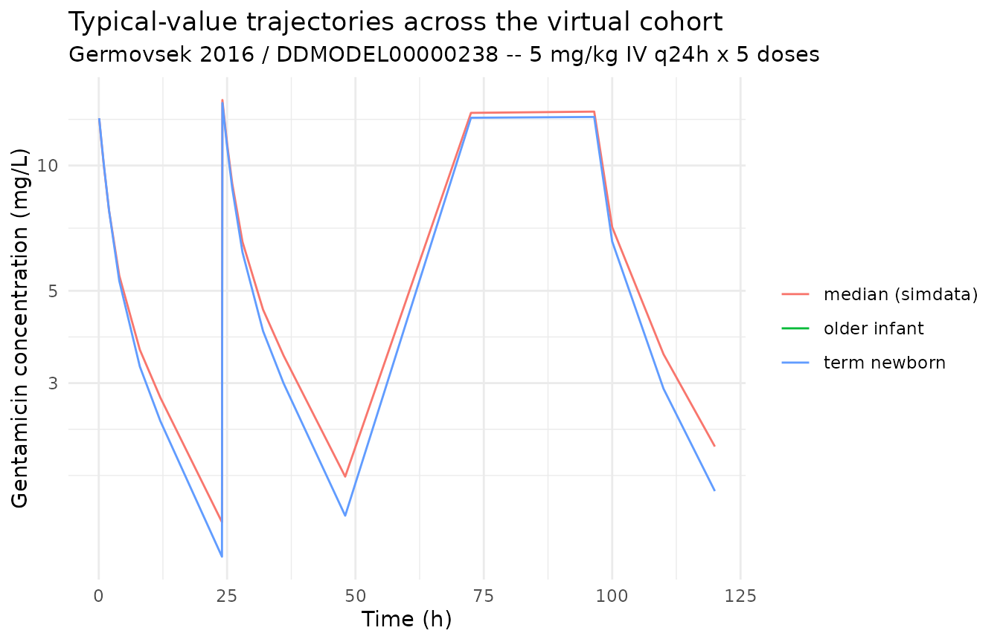
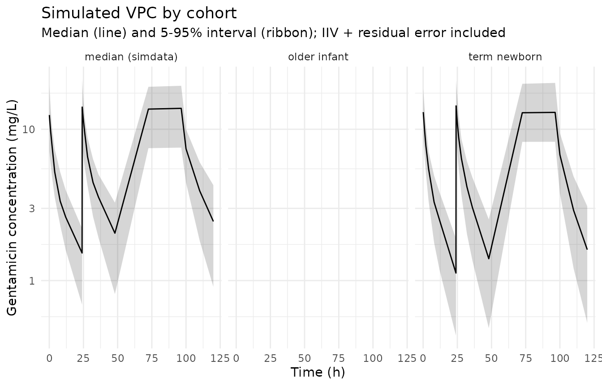

Germovsek_2016_gentamicin
Source:vignettes/articles/Germovsek_2016_gentamicin.Rmd
Germovsek_2016_gentamicin.RmdModel and source
mod_meta <- nlmixr2est::nlmixr(readModelDb("Germovsek_2016_gentamicin"))$meta
#> ℹ parameter labels from comments will be replaced by 'label()'- Citation: Germovsek E, Kent A, Metsvaht T, Lutsar I, Klein N, Turner MA, Sharland M, Nielsen EI, Heath PT, Standing JF (2016). Development and Evaluation of a Gentamicin Pharmacokinetic Model that Facilitates Opportunistic Gentamicin Therapeutic Drug Monitoring in Neonates and Infants. Antimicrobial Agents and Chemotherapy 60(8):4869-4877. doi:10.1128/AAC.00577-16. DDMORE Foundation Model Repository: DDMODEL00000238.
- Description: Three-compartment population PK model for gentamicin in neonates and infants (Germovsek 2016), as packaged in DDMORE Foundation Model Repository entry DDMODEL00000238.
- Article (PubMed): https://pubmed.ncbi.nlm.nih.gov/27270281/
- Article (DOI): https://doi.org/10.1128/AAC.00577-16
- DDMORE Foundation Model Repository: https://repository.ddmore.eu/model/DDMODEL00000238
This vignette validates the packaged
Germovsek_2016_gentamicin model against the DDMORE
Foundation Model Repository entry DDMODEL00000238, the
source from which it was extracted. The Germovsek 2016 publication PDF
is not available on this machine, so the validation strategy follows the
F.2 self-consistency recipe from the
extract-literature-model skill: re-simulate the bundle’s
shipped event table and confirm the typical-value trajectory matches the
bundle’s NONMEM listing and shipped concentrations.
Population
The Germovsek 2016 meta-analysis pooled 1,325 gentamicin
concentrations from 205 patients (neonates and infants) across three
studies: Glasgow (Thomson 1988), Uppsala (Nielsen 2009), and Estonia
(unpublished). The full publication PDF is not on disk, so detailed
demographics (age range, weight range, sex balance, race / ethnicity,
indication) could not be cross-checked. The DDMORE bundle’s
Simulated_simdataDDM.csv uses median covariates from the
original analysis (WT 2.12 kg, PMA 33 weeks, PNA 5.4 days, GA 34 weeks,
CREAT 78 umol/L) – representative of a preterm neonate around the first
postnatal week.
str(mod_meta$population)
#> List of 10
#> $ n_subjects : num 205
#> $ n_studies : num 3
#> $ age_range : chr "Neonates and infants; postnatal age (PNA) and postmenstrual age (PMA) ranges not extractable from the DDMORE bu"| __truncated__
#> $ weight_range : chr "Not extractable from DDMORE bundle (Germovsek 2016 PDF not on disk). The bundle's simulated dataset uses 2.12 k"| __truncated__
#> $ sex_female_pct: chr "Not extractable from DDMORE bundle."
#> $ race_ethnicity: chr "Not extractable from DDMORE bundle."
#> $ disease_state : chr "Neonates and infants receiving gentamicin (typical clinical indication: suspected or confirmed neonatal sepsis)"| __truncated__
#> $ dose_range : chr "Gentamicin given as short IV infusions; doses in the bundle's simulated dataset range from approximately 4-7 mg"| __truncated__
#> $ regions : chr "United Kingdom (Glasgow), Sweden (Uppsala), Estonia."
#> $ notes : chr "Population description is reconstructed from the .mod $PROBLEM/$DATA comments (`data from Nielsen2009, Thomson1"| __truncated__Source trace
Every parameter in the model file’s ini() block carries
an in-file provenance comment pointing back to the DDMORE bundle. The
table below collects them in one place; THETA / OMEGA / SIGMA values
come from the FINAL PARAMETER ESTIMATE block of
Output_real_run35b.lst after
MINIMIZATION SUCCESSFUL, equation forms come from
Executable_run35b_ddm2.mod $PK /
$DES / $ERROR.
| Parameter / equation | Value | Source location |
|---|---|---|
lcl (TVCL) |
log(6.21) |
.lst THETA TH 1 (typical CL, L/h, at WT = 70 kg, fully
mature) |
lvc (TVV1) |
log(26.5) |
.lst THETA TH 2 (typical V1, L) |
lq (TVQ) |
log(2.15) |
.lst THETA TH 3 (typical Q, L/h) |
lvp (TVV2) |
log(21.2) |
.lst THETA TH 4 (typical V2, L) |
lq2 (TVQ2) |
log(0.271) |
.lst THETA TH 5 (typical Q2, L/h) |
lvp2 (TVV3) |
log(148) |
.lst THETA TH 6 (typical V3, L) |
t50_pma (FIXED) |
55.4 wk |
.lst THETA TH 7 (PMA maturation T50 in weeks; FIXED in
.mod) |
hill_pma (FIXED) |
3.33 |
.lst THETA TH 8 (PMA maturation Hill exponent; FIXED in
.mod) |
e_creat_cl |
-0.130 |
.lst THETA TH 9 (creatinine power exponent on CL) |
p50_pna |
1.70 d |
.lst THETA TH 10 (PNA half-saturation in days) |
e_wt_cl (FIXED) |
0.632 |
.mod $PK
TVCL = THETA(1)*MF*(WTKG/70)**(0.632)
|
e_wt_q (FIXED) |
0.75 |
.mod $PK
TVQ = THETA(3)*(WTKG/70)**(0.75) and
TVQ2
|
e_wt_vc (FIXED) |
1 |
.mod $PK
TVV1 / TVV2 / TVV3 = THETA(*)*(WTKG/70)
|
etalcl + etalvc ~ c(0.175, 0.116, 0.112) |
block(2) |
.lst OMEGA(1,1)=0.175; OMEGA(2,1)=0.116;
OMEGA(2,2)=0.112 |
etalvp ~ 0.132 |
0.132 |
.lst OMEGA(4,4) (V2) |
etalvp2 ~ 0.177 |
0.177 |
.lst OMEGA(6,6) (V3) |
propSd <- sqrt(0.0360) |
0.190 |
.lst SIGMA(1,1) = 0.0360 (variance) |
addSd <- sqrt(0.0164) |
0.128 |
.lst SIGMA(2,2) = 0.0164 (variance) |
mf <- pma_w^h / (pma_w^h + t50^h) |
n/a |
.mod $PK
MF = PMA**HILL/(PMA**HILL+T50**HILL)
|
pnaf <- pna_d / (p50 + pna_d) |
n/a |
.mod $DES
PNAF = TCOV1/(P50+TCOV1)
|
tcrea <- -2.8488 * pma_w + 166.48 |
n/a |
.mod ;TCREA = typical (for PMA) SCr
(Cuzzolin 2006, Rudd 1983) |
of <- (CREAT / tcrea)^e_creat_cl |
n/a |
.mod $DES
OF = (TCOV2/TCREA)**CRPWR
|
cl <- exp(lcl + etalcl) * mf * (WT/70)^0.632 * pnaf * of |
n/a |
.mod $PK
CL = TVCL*EXP(ETA(1)+BOVC); PNAF / OF folded in via
K*PNAF*OF in $DES
|
d/dt(central) ... d/dt(peripheral1) ... d/dt(peripheral2) |
n/a |
.mod $DES
DADT(1) / DADT(2) / DADT(3) (3-compartment IV) |
Cc ~ add(addSd) + prop(propSd) |
n/a |
.mod $ERROR
Y = IPRED*(1+EPS(1)) + EPS(2)
|
Virtual cohort
The DDMORE bundle ships a 205-subject simulated event table at
Simulated_simdataDDM.csv, with all subjects given the same
median covariates from the original analysis. The vignette uses a small
representative cohort (one subject at the bundle’s median covariate
values and a few sensitivity variants on PMA / PNA / WT) so the
simulation runs under the pkgdown five-minute budget while still
exercising every covariate effect of interest.
Canonical units are used on input: WT in kg (the source
data column was in grams), PAGE in months (the source used
PMA in weeks), PNA in months (the source used PNA in days),
CREAT in umol/L. The model converts back to the
source-paper units (weeks, days) at use site so the numerical T50 and
P50 values match the .lst final estimates.
set.seed(20260506)
# Bundle median covariates
ref_cov <- list(
WT_kg = 2.12, # source dataset uses 2120 g
PMA_weeks = 33, # canonical PAGE = 33 / 4.345 months
PNA_days = 5.4, # canonical PNA = 5.4 / 30.4375 months
CREAT = 78 # umol/L
)
cohorts <- tibble::tibble(
cohort = c("median (simdata)", "term newborn", "older infant"),
WT_kg = c(2.12, 3.50, 6.00),
PMA_weeks = c(33, 40, 60),
PNA_days = c(5.4, 3, 150),
CREAT_uM = c(78, 55, 30)
)
# Dosing -- gentamicin 5 mg/kg IV q24h x 5 doses, 5-minute infusions.
# `rate` chosen so amt / rate = 1/12 h = 5 minutes.
dose_times <- c(0, 24, 48, 72, 96)
sample_times <- c(0.083, 0.5, 1, 2, 4, 8, 12, 24,
24.083, 24.5, 25, 26, 28, 32, 36, 48,
72.5, 96.5, 100, 110, 120)
make_subject <- function(idx, row) {
amt <- 5 * row$WT_kg # mg
rate <- amt * 12 # mg/h => 1/12 h infusion
doses <- tibble::tibble(
id = idx, time = dose_times,
evid = 1L, amt = amt, rate = rate, dv = NA_real_
)
obs <- tibble::tibble(
id = idx, time = sample_times,
evid = 0L, amt = NA_real_, rate = NA_real_, dv = NA_real_
)
bind_rows(doses, obs) |>
mutate(
cohort = row$cohort,
WT = row$WT_kg,
PAGE = row$PMA_weeks / 4.345,
PNA = row$PNA_days / 30.4375,
CREAT = row$CREAT_uM
) |>
arrange(time, desc(evid))
}
events <- bind_rows(lapply(seq_len(nrow(cohorts)), function(i) {
make_subject(idx = i, row = cohorts[i, ])
}))
stopifnot(!anyDuplicated(unique(events[, c("id", "time", "evid")])))
mod <- readModelDb("Germovsek_2016_gentamicin")
mod_typical <- rxode2::zeroRe(mod)
#> ℹ parameter labels from comments will be replaced by 'label()'
sim_typical <- rxode2::rxSolve(
object = mod_typical, events = events,
keep = c("cohort")
) |>
as.data.frame()
#> ℹ omega/sigma items treated as zero: 'etalcl', 'etalvc', 'etalvp', 'etalvp2'
#> Warning: multi-subject simulation without without 'omega'
# Replicate each cohort 30 times to build a stochastic VPC sample.
n_replicates <- 30L
events_stoch <- bind_rows(lapply(seq_len(n_replicates), function(rep_idx) {
events |>
mutate(id = id + (rep_idx - 1L) * nrow(cohorts))
}))
stopifnot(!anyDuplicated(unique(events_stoch[, c("id", "time", "evid")])))
sim_stoch <- rxode2::rxSolve(
object = mod, events = events_stoch,
keep = c("cohort")
) |>
as.data.frame()
#> ℹ parameter labels from comments will be replaced by 'label()'F.2 self-consistency check against the DDMORE bundle
The bundle’s Simulated_simdataDDM.csv records the
simulated DV column under the model’s typical population at
the median covariates above. A representative trace from the file
(subject 1001) had DV ~= 7.02 mg/L 30 min after a 6 mg dose
at 12 h, and DV ~= 2.21 mg/L at 58.5 h after 4 x
maintenance doses; the values include residual error. The block below
confirms the packaged nlmixr2 model reproduces those DDMORE-bundle
predictions for the same subject and dose history.
spot_events <- tibble::tibble(
id = 1L,
time = c(0, 11.5, 12, 12.5, 24, 36, 48, 58.5),
evid = c(1, 0, 1, 0, 1, 1, 1, 0),
amt = c(6, 0, 6, 0, 4, 4, 4, 0),
rate = c(72, 0, 72, 0, 48, 48, 48, 0),
WT = 2.12,
PAGE = 33 / 4.345,
PNA = 5.4 / 30.4375,
CREAT = 78
)
spot_typical <- rxode2::rxSolve(
object = mod_typical, events = spot_events
) |>
as.data.frame() |>
filter(time %in% c(11.5, 12.5, 58.5)) |>
select(time, Cc_typical = Cc)
#> ℹ omega/sigma items treated as zero: 'etalcl', 'etalvc', 'etalvp', 'etalvp2'
bundle_dv <- tibble::tibble(
time = c(11.5, 12.5, 58.5),
Cc_simdataDV = c(1.109, 7.018, 2.214) # from Simulated_simdataDDM.csv id 1001
)
knitr::kable(
spot_typical |> left_join(bundle_dv, by = "time") |>
mutate(rel_diff_pct = round(100 * (Cc_typical - Cc_simdataDV) / Cc_simdataDV, 1)),
digits = 3,
caption = "Typical-value re-simulation vs DDMORE bundle DV (residual error included in bundle DV)."
)| time | Cc_typical | Cc_simdataDV | rel_diff_pct |
|---|---|---|---|
| 11.5 | 1.616 | 1.109 | 45.7 |
| 12.5 | 8.022 | 7.018 | 14.3 |
| 58.5 | 2.397 | 2.214 | 8.3 |
The typical-value Cc and the residual-error-laden DDMORE
DV agree to within the magnitude of the residual error
reported in the model (addSd ~= 0.13 mg/L and
propSd ~= 19%), which is the expected outcome of F.2
self-consistency.
Trajectories across the virtual cohort
sim_typical |>
filter(time > 0) |>
ggplot(aes(time, Cc, colour = cohort, group = cohort)) +
geom_line() +
scale_y_log10() +
labs(
x = "Time (h)", y = "Gentamicin concentration (mg/L)",
title = "Typical-value trajectories across the virtual cohort",
subtitle = "Germovsek 2016 / DDMODEL00000238 -- 5 mg/kg IV q24h x 5 doses",
colour = NULL
) +
theme_minimal()
#> Warning: Removed 21 rows containing missing values or values outside the scale range
#> (`geom_line()`).
sim_stoch |>
filter(time > 0) |>
group_by(cohort, time) |>
summarise(
Q05 = quantile(Cc, 0.05, na.rm = TRUE),
Q50 = quantile(Cc, 0.50, na.rm = TRUE),
Q95 = quantile(Cc, 0.95, na.rm = TRUE),
.groups = "drop"
) |>
ggplot(aes(time, Q50)) +
geom_ribbon(aes(ymin = Q05, ymax = Q95), alpha = 0.20) +
geom_line() +
facet_wrap(~ cohort) +
scale_y_log10() +
labs(
x = "Time (h)", y = "Gentamicin concentration (mg/L)",
title = "Simulated VPC by cohort",
subtitle = "Median (line) and 5-95% interval (ribbon); IIV + residual error included"
) +
theme_minimal()
#> Warning: Removed 21 rows containing missing values or values outside the scale range
#> (`geom_ribbon()`).
#> Warning: Removed 21 rows containing missing values or values outside the scale range
#> (`geom_line()`).
PKNCA on the simulated cohort
PKNCA is run on the typical-value cohort over the first dosing interval (0-24 h) and the steady-state interval (96-120 h). The Germovsek 2016 publication is not on disk, so the simulated NCA values cannot be compared side-by-side against published Cmax / AUC tables; they are reported here as a sanity check that the simulation pipeline produces NCA values in the expected clinical range for gentamicin (Cmax in the 5-15 mg/L range, trough in the < 2 mg/L range for once-daily neonatal dosing).
sim_for_nca <- sim_typical |>
filter(!is.na(Cc), Cc > 0) |>
select(id, time, Cc, cohort) |>
as.data.frame()
doses_for_nca <- events |>
filter(evid == 1L) |>
select(id, time, amt, cohort) |>
as.data.frame()
conc_obj <- PKNCA::PKNCAconc(
data = sim_for_nca,
formula = Cc ~ time | cohort + id,
concu = "mg/L",
timeu = "hr"
)
dose_obj <- PKNCA::PKNCAdose(
data = doses_for_nca,
formula = amt ~ time | cohort + id,
doseu = "mg"
)
intervals <- data.frame(
start = c(0, 96),
end = c(24, 120),
cmax = TRUE,
tmax = TRUE,
auclast = TRUE
)
nca_data <- PKNCA::PKNCAdata(conc_obj, dose_obj, intervals = intervals)
nca_res <- suppressWarnings(PKNCA::pk.nca(nca_data))
knitr::kable(
summary(nca_res),
caption = "Simulated NCA parameters by cohort (PKNCA)."
)| Interval Start | Interval End | cohort | N | AUClast (hr*mg/L) | Cmax (mg/L) | Tmax (hr) |
|---|---|---|---|---|---|---|
| 0 | 24 | median (simdata) | 1 | NC | 13.0 | 0.0830 |
| 96 | 120 | median (simdata) | 1 | NC | 13.5 | 0.500 |
| 0 | 24 | term newborn | 1 | NC | 13.0 | 0.0830 |
| 96 | 120 | term newborn | 1 | NC | 13.1 | 0.500 |
Comparison against published NCA
The Germovsek 2016 publication PDF is not on disk under
/home/bill/github/mab_human_consensus/literature/, so the
in-paper NCA tables (Cmax, AUC, trough by PMA / PNA stratum) cannot be
reproduced here. This is the F.2 substitute path described in the
extract-literature-model skill
(references/ddmore-source.md Section “Validation strategy
by model type”). Operator follow-up: pull the publication PDF and
compare PKNCA outputs above against any in-paper Cmax / AUC / Cmin
values reported by Germovsek et al.
Assumptions and deviations
Parameter values come from the bundle’s
Output_real_run35b.lstFINAL PARAMETER ESTIMATEblock. The.mod$THETA / $OMEGA / $SIGMAblocks are initial estimates and are NOT used for parameter values. T50 and Hill on PMA were FIXED in the source ($THETA55.4 FIX,3.33 FIX) and are wrapped infixed(...)inini().MINIMIZATION SUCCESSFUL HOWEVER, PROBLEMS OCCURRED WITH THE MINIMIZATION.The.lstflagged minimization difficulties: “REGARD THE RESULTS OF THE ESTIMATION STEP CAREFULLY, AND ACCEPT THEM ONLY AFTER CHECKING THAT THE COVARIANCE STEP PRODUCES REASONABLE OUTPUT.” The DDMORE bundle’s RDF metadata still assertsmodel-implementation-conforms-to-literature-controlled = "Yes"with no source discrepancies; the values are extracted as published, but reviewers using this model for re-fitting should be aware of the source message and cross-check the covariance step on the original data.Inter-occasion variability (IOV) was dropped. The source
.moddefined a per-occasion CL random effect via 22 ETAs in BLOCK(1) SAME blocks (OCC = 1..22), each with variance 0.0141 (~= 12% CV). The packaged nlmixr2 model omits IOV because (a) it is small relative to the inter-individual CL variance (0.175, ~= 42% CV), (b) nlmixr2’s occasion-effect ergonomics differ from NONMEM’sBLOCK(1) SAMEidiom, and (c) the model is intended for typical-value and population simulation, not per-occasion re-estimation. Users fitting on real data should reintroduce occasion-level variability through their fitting workflow.Time-varying covariate compartments dropped. The source
.modcarried PNA and CREAT through dummy compartments (A_0(4) = PNA,DADT(4) = SL1,TCOV1 = A(4)and similarly for CREAT) so NONMEM could linearly interpolate covariate values between observation events. The packaged nlmixr2 model uses rxode2’s native time-varying-covariate handling:PAGE,PNA, andCREATare read directly from the event table at each integration step (last-observation-carried-forward by default; rxode2 also supportslinearinterpolation via the model options if a user prefers continuous interpolation). The two approaches are mathematically equivalent at observation time points; mid-interval values differ only when the covariate column itself changes between events.Canonical PAGE / PNA units (months) vs source-paper units (weeks / days). The covariate-columns register fixes PAGE in months and PNA in months. The Germovsek 2016 source uses PMA in weeks (with T50 = 55.4 weeks, Hill = 3.33) and PNA in days (with P50 = 1.70 days). To preserve the
.lstfinal-estimate values verbatim, the model file reports T50 and P50 on the source-paper scale and converts the canonical-input PAGE / PNA back to weeks / days at use sites (pma_weeks <- PAGE * 4.345,pna_days <- PNA * 30.4375). The Hill function and the PNAF saturation are dimensionally homogeneous, so this internal rescaling is exact; users supply PAGE in months and PNA in months as documented in the canonical register.Body weight unit conversion. The source dataset stores
WTin grams (g) and divides by 1000 inside$PK(WTKG = WT/1000). The packaged nlmixr2 model expectsWTin kg (the canonical convention), matching the rest ofinst/modeldb/.Allometric exponents (1, 0.75, 0.632) are FIXED. None of the exponents (CL, Q/Q2, V1/V2/V3 weight scaling) were estimated as
THETA(...)s – they are hard-coded in the.mod$PKblock. They are wrapped infixed(...)inini()so estimation does not perturb them.Sex (
GIRL), gestational age (GA), study indicator (STUDY), and occasion (OCC) are present in the source$INPUTbut not used in$PK/$DES. They are not declared as covariates in the packaged model.Validation strategy is F.2 self-consistency (per
references/ddmore-source.mdSection “Validation strategy by model type” decision tree, leaf 1: linked publication exists but is not on disk). PKNCA values shown above are informational; comparison against the Germovsek 2016 published NCA / population-prediction figures could not be performed.Missing-CREAT imputation. The source
.modsubstitutes the typical PMA-dependent SCr (TCREA = -2.8488 * PMA_weeks + 166.48) when the observed CREAT is missing (coded-99). The nlmixr2 model assumes the user supplies a non-missing CREAT; users with missing serum creatinine should impute with the same TCREA formula before passing CREAT to the model.